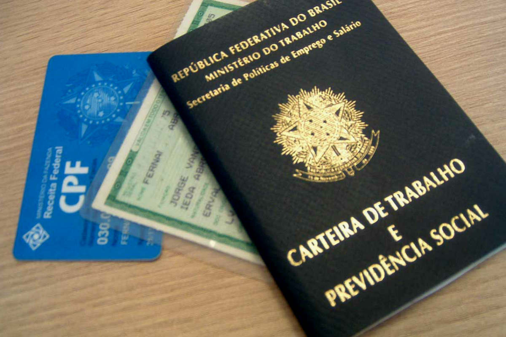

Matrícula e Documentos
O sonho de muitos estudantes é conseguir uma bolsa de estudo para se formar no ensino superior sem se preocupar com as mensalidades. Para estes casos, uma ótima solução é tentar o Programa Universidade para Todos (Prouni), uma iniciativa do governo federal que disponibiliza bolsas de estudos em instituições de ensino privado.
Para quem tentou e não conseguiu ser aprovado nas chamadas regulares, existem as vagas remanescentes do Prouni. O importante é não desistir, porque essa também poderá ser uma oportunidade para fazer o curso dos sonhos.
A seguir, explicaremos como funciona o Prouni remanescentes e quem pode se inscrever. Continue a leitura!

Neste artigo você vai encontrar:
Como são as chamadas do PROUNI?
O processo seletivo do Prouni tem uma única etapa de inscrição, com duas chamadas sucessivas mais a lista de espera.
Assim, o candidato que não for pré-selecionado na primeira chamada continua concorrendo na segunda chamada. Ao final das duas chamadas, o candidato que ainda não foi pré-selecionado ou teve sua reprovação por não formação de turma pode manifestar interesse em participar da lista de espera do Prouni, que será usada pelas instituições de ensino na convocação de candidatos para preenchimento de bolsas eventualmente não ocupadas.
Após ser chamado, qual o próximo passo? O que o candidato deve fazer?
O candidato deve apresentar na instituição em que foi pré-selecionado, no período estabelecido no cronograma, os documentos que comprovem as informações prestadas na ficha de inscrição. É de inteira responsabilidade do candidato verificar, na instituição, os horários e o local de comparecimento para a aferição das informações. A perda do prazo ou a não comprovação das informações implicará, automaticamente, a reprovação do candidato.
Algumas instituições submetem os pré-selecionados a um processo seletivo próprio, que pode ser diferente do vestibular. O candidato deve verificar, no momento da inscrição, se a instituição vai aplicar processo seletivo próprio. As instituições que optarem por processo próprio devem explicar formalmente aos estudantes, no prazo máximo de 24 horas da divulgação dos resultados das chamadas, a natureza e os critérios de aprovação, os quais não podem ser mais rigorosos do que aqueles aplicados aos pré-selecionados nos processos seletivos regulares. Não pode ser cobrada nenhuma taxa por processo próprio de seleção.
Como são as políticas afirmativas(cotas) no PROUNI?
A reserva de vagas para candidatos pretos, pardos e indígenas é obrigatória no Prouni desde a Lei nº 11.096, instituída em 13 de janeiro de 2005. O candidato cotista também deve se enquadrar nos demais critérios de seleção do programa.
Diferentemente do Sisu, as cotas no Prouni são somente raciais, e não sociais. Isso ocorre porque esse programa de bolsas de estudo do governo já seleciona estudantes de acordo com a renda per capita familiar, além de ser obrigatório ter realizado o ensino médio em uma escola pública brasileira ou como bolsista em uma instituição privada.
Por isso, as vagas reservadas são apenas para candidatos negros, índios e com algum tipo de deficiência, pois a seleção já é voltada para pessoas com menor renda. A quantidade dessas bolsas é estipulada pelo número de pretos, pardos e indígenas registrado no último censo realizado pelo Instituto Brasileiro de Geografia e Estatística (IBGE) na região.
No caso de PCD, a comprovação ocorre por meio de laudo médico, indicando o grau de deficiência. Já os pretos, pardos e índios precisam apenas realizar a autodeclaração, assinando um documento em que afirmam preencher os requisitos.
Quem opta por concorrer na modalidade de cotas irá disputar vaga somente com outros candidatos que também escolheram essa modalidade, e o sistema irá selecionar os que possuírem as melhores notas dentre eles. Vale ressaltar que no Prouni a disputa por uma vaga se dá entre quem escolheu as mesmas opções de curso, faculdade, campus, turno e modalidade de concorrência.
Quem pode concorrer por cotas no PROUNI?Para quem quiser concorrer o Prouni pelas oportunidades de cotas é necessário preencher os limites de renda máxima para participar e demais requisitos do programa, além de pertencer aos grupos que têm direito ao processo seletivo diferenciado.
Para poder verificar a Renda Familiar que se encaixe no PROUNI acesse a página Cálculo de Renda.
Os requisitos para poder participar do Prouni são:
As pessoas com deficiência dispensam os requisitos relacionados ao estudo em escola pública. Além delas, os professores da rede pública, integrantes do quadro permanente de funcionários, exercendo efetivamente o magistério, têm algumas condições especiais – especialmente para os cursos de licenciatura – nos quais não precisam comprovar renda. Podem concorrer por cotas no Prouni os seguintes grupos:
Como as instituições podem alterar as regras?
É permitida às instituições a realização de processo seletivo próprio dos pré-selecionados pelo Prouni. Essa informação é dada ao candidato no momento da inscrição. Nesses casos, as instituições que optarem por processo próprio de seleção devem explicar formalmente aos estudantes, no prazo máximo de 24 horas da divulgação dos resultados das chamadas, a natureza e os critérios de aprovação, os quais não podem ser mais rigorosos do que aqueles aplicados aos pré-selecionados em seus processos seletivos regulares. É vedada a cobrança de taxas para realização do processo seletivo próprio.
Como funciona a lista de espera do PROUNI?
Para participar da lista de espera, o candidato deve obrigatoriamente confirmar, na página do Prouni, no prazo especificado no cronograma, o interesse na bolsa.
A lista de espera do Prouni classifica os estudantes de acordo com as opções e as notas obtidas no Enem e a modalidade de concorrência, observada a seguinte ordem:
Pode participar da lista de espera, exclusivamente para o curso correspondente à primeira opção, o candidato:
Pode participar da lista de espera, exclusivamente para o curso correspondente à segunda opção, o candidato:
Todos os candidatos participantes da lista de espera terão que comparecer às respectivas instituições para apresentar a documentação para comprovação das informações prestadas na inscrição.
Quais os documentos do PROUNI? Onde eu encontro a lista?
O candidato deve apresentar na instituição em que foi pré-selecionado de forma presencial ou virtual/eletrônica, no período estabelecido no cronograma, os documentos que comprovem as informações prestadas na ficha de inscrição. É de inteira responsabilidade do candidato verificar, na instituição, os horários e o local de comparecimento para a aferição das informações. A perda do prazo ou a não comprovação das informações implicará, automaticamente, a reprovação do candidato.
Ao receber a documentação do candidato, a instituição deve, obrigatoriamente, entregar o protocolo de recebimento de documentação do Prouni. Contudo, o candidato deve ficar atento, pois esse procedimento não afasta eventual exigência de entrega de documentos adicionais, caso seja julgada necessária pelo coordenador do Prouni na instituição.
Os documentos fornecidos precisam ser cópias simples, acompanhadas dos originais, não havendo a necessidade de cópias autenticadas em cartório.
Documento de identificação
Comprovante de residência
Original e cópia de uma das opções abaixo. Pode estar em nome do bolsista ou de algum membro da família.
Comprovantes de Rendimentos
Original e cópia de uma das opções abaixo - do candidato e dos membros da família:
A lista de documentos do estudante e membros do grupo familiar pode ser consultada no site do Prouni
Quais os critérios de desempate no PROUNI?
No caso de notas idênticas na média aritmética das notas do Enem, o desempate entre os candidatos será determinado de acordo com a seguinte ordem de critérios:
Se não houver formação de turma para o curso em que o candidato foi selecionado o que acontece?
A bolsa do Prouni só pode ser concedida caso haja formação de turma no período letivo inicial do curso. Isso ocorre somente quando há número mínimo necessário de alunos matriculados para a formação de uma turma inicial.
Os candidatos pré-selecionados para cursos, nos quais não houver formação de turma, serão reprovados. Terão direito à bolsa apenas os candidatos que já estiverem matriculados no respectivo curso.
No entanto, o candidato pode continuar concorrendo na chamada seguinte para o outro curso escolhido em primeira ou segunda opção. Caso não seja pré-selecionado, pode manifestar interesse em participar da lista de espera do Prouni.
O que é PROUNI Remanescente?
As vagas remanescentes são aquelas não preenchidas ao longo do processo seletivo do Prouni (Programa Universidade para Todos), por desistência de candidatos pré-selecionados na primeira, segunda chamada e na lista de espera ou, ainda, por falta de documentação necessária para comprovar os dados na inscrição.
Essas vagas são voltadas para estudantes já matriculados em uma faculdade privada e que atendam aos requisitos do Prouni. Além disso, a seleção é feita por ordem de inscrição e não de acordo com as maiores notas, como acontece nas primeiras chamadas e na lista de espera.
Como funcionam as vagas remanescentes do Prouni?
O Prouni remanescentes é uma chance a mais que o programa oferece de conseguir a tão desejada bolsa de estudos. Elas abrem inscrições alguns dias depois de encerrado o processo de lista de espera e é preciso ficar atento às datas, que são anunciadas conforme as vagas vão surgindo.
A seleção para vagas remanescentes é encarada como um novo processo seletivo. Ou seja: quem já estava inscrito na seleção regular e desejar participar terá que se inscrever novamente.
O processo de escolha segue a mesma lógica da seleção tradicional: as maiores notas no Enem levam a bolsa. Quem conseguir se dar bem nessa etapa precisa ficar atento aos prazos determinados pelas faculdades participantes para efetivação da matrícula.
É importante saber que o candidato pode conseguir a bolsa remanescente já estudando, então se ele for matriculado em uma faculdade que esteja participando do processo, poderá estudar os semestres que faltam pagando a mensalidade com 50% de desconto ou sem pagar nada. Para saber mais sobre o assunto, entenda como funciona o Prouni.
Bolsas remanescentes do Prouni?
Todos os semestres, o Prouni abre as inscrições para que os estudantes interessados possam realizar a sua inscrição em um curso e faculdade que faz parte do programa. Mas nem sempre as vagas oferecidas são totalmente preenchidas e quando isso acontece as mesmas são divulgadas pelo site oficial do Prouni para que os candidatos que não conseguiram uma vaga antes pleiteada possam se inscrever novamente.
Para participar no processo seletivo para o preenchimento das vagas remanescentes Prouni 2024 é necessário se inscrever na lista de espera para o curso pretendido.